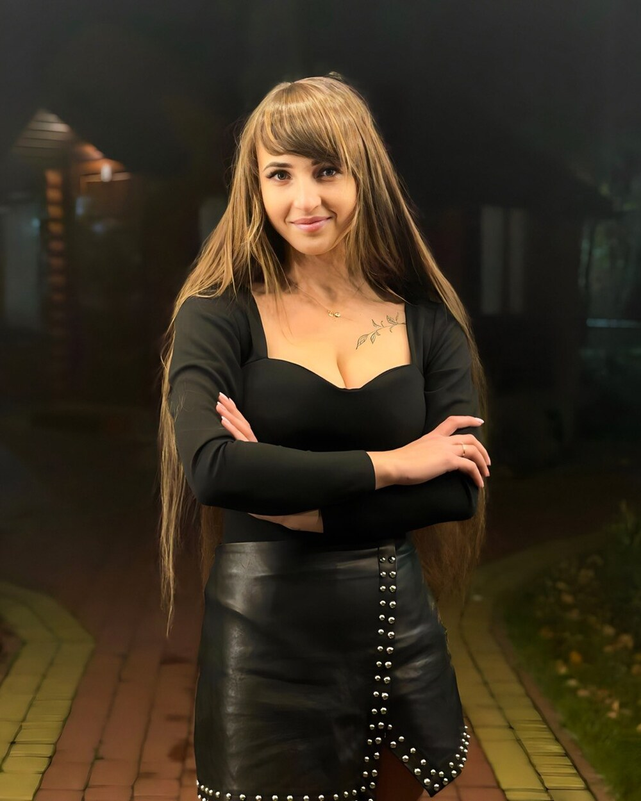

Досвід і техніка
7 років практики — відточене накладання, акуратна ізоляція вій і комфорт навіть при чутливих очах.

Lashmaker · Рівне
Індивідуальний підхід до кожної деталі — від консультації до фінального штриха. Класика, об'єм 2D–5D та мокрий ефект.

Роблю нарощення вій у Рівному понад 7 років і працювала із сотнями клієнток — від першого нарощення до щомісячного догляду. Для мене важливо не просто «наростити», а підібрати форму, вигин і довжину під конкретні очі, щоб погляд виглядав природно і доглянуто.
Оберіть об'єм: від природної класики до пишного 5D.
Фінальну вартість майстер підтверджує перед записом.
Натисніть на фото, щоб розглянути ближче.
7 років практики — відточене накладання, акуратна ізоляція вій і комфорт навіть при чутливих очах.
Клей і вії підбираються індивідуально з урахуванням стану ваших власних вій.
Юлія пояснює правила догляду, щоб результат тримався якнайдовше.
У Юлії класика коштує 550 грн, 2D — 600 грн, 3D — 650 грн, 4D та мокрий ефект — по 700 грн, 5D — 750 грн. Промінчики — +50 грн. Остаточну вартість майстер підтверджує перед записом.
Цифра — це кількість тонких вій у пучку на одну натуральну. 2D дає легкий об'єм, 3D — збалансований, 4D — насичений, 5D — максимально густий ефект. Класика — одна вія на одну натуральну.
Зняття вій Юлії — безкоштовно при повторному нарощенні. Зняття вій іншого майстра — 100 грн.
Напишіть Юлії в Telegram, Instagram або Viber чи зателефонуйте за номером +380 97 514 16 25 — вона підбере зручний час.
Напишіть у зручний месенджер або зателефонуйте — Юлія підбере час у Рівному й відповість на всі запитання.